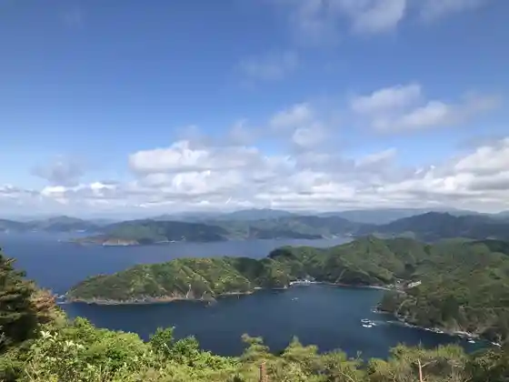
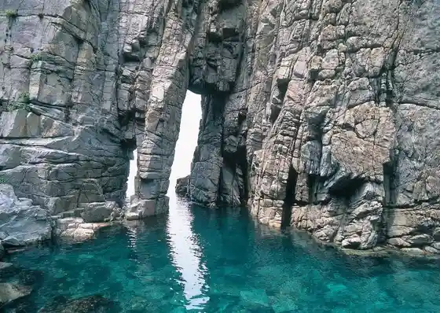
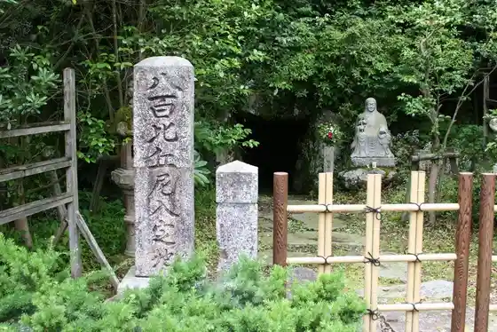
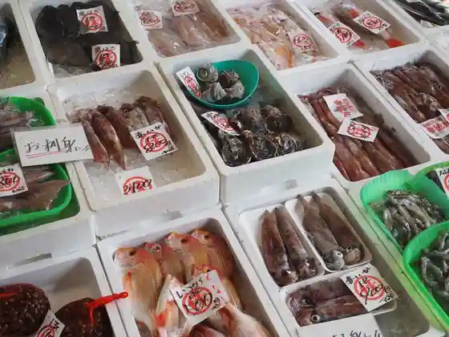

Enzeru Line
Obama, Fukui · 0770-53-1111 · Official / source link

Meisho Sotomo
Obama, Fukui · 0770-52-3111 · Official / source link

Happyaku Bikuni Nyujo Hora
Obama, Fukui · 0770-52-1936 · Official / source link

Wakasa Obama O Sakana Center
Obama, Fukui · 0770-53-1530 · Official / source link

Mantoku Tera
Obama, Fukui · 0770-56-2308 · Official / source link
Rentasaikuru − Obama − Wakasa Obama Tourist Information (JR Obama Ekimae)
Obama, Fukui · 0770-52-3844 · Official / source link
Wakasa Hime Shrine (Wakasa Ichinomiya)
Obama, Fukui · 0770-56-1116 · Official / source link
Miketsukuni Wakasa Obama Shokubunka Kan
Obama, Fukui · 0770-53-1000 · Official / source link
Myotsu Tera
Obama, Fukui · 0770-57-1355 · Official / source link
San Cho Town
Obama, Fukui · 0770-53-1111 · Official / source link
Wakasa Workshop
Obama, Fukui · 0770-53-1000 · Official / source link
Wakasa Fisshamanzu Wafu
Obama, Fukui · 0770-52-3111 · Official / source link
Saba Kaido MUSEUM (Saba Kaido Museum)
Obama, Fukui · 0770-64-6034 · Official / source link
National Wakasa Wan Seishonen Nature no Ie
Obama, Fukui · 0770-54-3100 · Official / source link
Roadside Station (Wakasa Obama)
Obama, Fukui · 0770-56-3000 · Official / source link
Wakasa no Yado Wakasa Fuguto Kani no Hotel Sekumi Ya
Obama, Fukui · 0770-52-0020 · Official / source link
GOSHOEN (Go Shoen)
Obama, Fukui · 0770-64-5403 · Official / source link
Rentasaikuru - Obama − Obama Saikuringu Center (JR Higashi Obama Ekinai)
Obama, Fukui · 0770-56-1132 · Official / source link
Ningyo no Hama Beach
Obama, Fukui · 0770-53-1111 · Official / source link
Hosshin Tera
Obama, Fukui · 0770-52-0525 · Official / source link
Nomichi Port Yashiro
Obama, Fukui · 090-6729-6697 · Official / source link
Obama Joshi
Obama, Fukui · 0770-64-6034 · Official / source link
Wakasa Hiko Shrine (Wakasa Ichinomiya)
Obama, Fukui · Official / source link
Obama Machi no Eki Asahi Za
Obama, Fukui · 0770-52-2000 · Official / source link
Miyagawahimawari Hatake
Obama, Fukui · 0770-57-2020 · Official / source link
Shrine Tera
Obama, Fukui · 0770-56-1911 · Official / source link
Sora In Tera
Obama, Fukui · 0770-52-1936 · Official / source link
Obama Park
Obama, Fukui · 0770-53-1111 · Official / source link
Nishi Ogawa Beach
Obama, Fukui · 0770-52-2804 · Official / source link
Wakasa History Museum
Obama, Fukui · 0770-56-0525 · Official / source link
Hashi no Furusato Kan WAKASA
Obama, Fukui · 0770-52-1733 · Official / source link
Kumo Shiro Mizu
Obama, Fukui · 0770-52-3844 · Official / source link
Mantoku Tera no Yama Momiji
Obama, Fukui · 0770-56-2308 · Official / source link
Tada Tera
Obama, Fukui · 0770-56-0894 · Official / source link
SUP Village Yashiro
Obama, Fukui · 090-7745-0214 · Official / source link
Wakasa Koigawa Shiisaido Park
Obama, Fukui · 0770-53-1111 · Official / source link
Mameidoterasu
Obama, Fukui · 0770-53-1111 · Official / source link
Ensho Tera
Obama, Fukui · 0770-56-1902 · Official / source link
Myo Suke Tera
Obama, Fukui · 0770-58-0280 · Official / source link
Tsukamoto Mingei Center
Obama, Fukui · 0770-52-2590 · Official / source link
Haga Tera
Obama, Fukui · 0770-52-4502 · Official / source link
Obama Streetscape Hozon Museum
Obama, Fukui · 0770-53-3443 · Official / source link
Myoraku Tera
Obama, Fukui · 0770-56-0133 · Official / source link
Wakasa no Sato Park
Obama, Fukui · 0770-53-1111 · Official / source link
Eigenji
Obama, Fukui · Official / source link
Yamakawa Tomiko Memorial Museum
Obama, Fukui · 0770-52-3221 · Official / source link
Yashiro Beach
Obama, Fukui · 090-7745-0214 · Official / source link
A no Beach
Obama, Fukui · 0770-54-3450 · Official / source link
Kokubunji (Obama)
Obama, Fukui · 0770-56-2519 · Official / source link
U no Se Koen Museum
Obama, Fukui · 0770-53-1111 · Official / source link
Umeda Unpin Zo
Obama, Fukui · 0770-64-6034 · Official / source link
Shitsumi Beach
Obama, Fukui · 0770-54-3431 · Official / source link
Inu Kuma Beach
Obama, Fukui · 0770-54-3359 · Official / source link
Mantoku Tera no Goshiki Tsubaki
Obama, Fukui · 0770-56-2308 · Official / source link
[ Genzai Kyukanchu ] Shinrin no Mizu PR Kan
Obama, Fukui · 0770-56-5606 · Official / source link
Wakasa Obama Ningyo Myojin
Obama, Fukui · 0770-52-3845 · Official / source link
Tsune Taka Tera
Obama, Fukui · 0770-53-2327 · Official / source link
Yashiro Kannon Do Fukuju Tera
Obama, Fukui · Official / source link
Streetscape to Shoku no Kan Shiki Sai Kan Sui Gatsu
Obama, Fukui · 0770-52-5246 · Official / source link
Obama Yakusho
Obama, Fukui · 0770-53-1111 · Official / source link